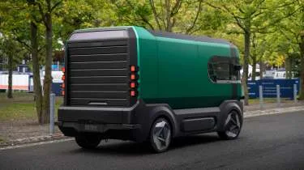
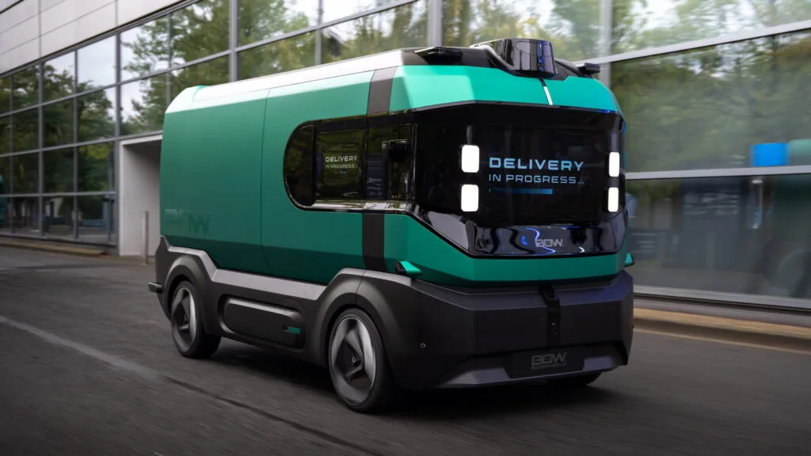
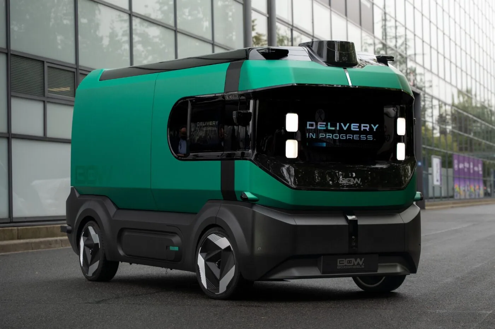

▲ IAA 모빌리티 2026에서 공개된 스텔란티스의 무인 전기 물류 콘셉트카 'BOW' ⓒ Stellantis Pro One
운전석도, 앞유리도, 대시보드도 없다. 사람이 탈 공간 자체를 지워버리고 그 자리를 전부 화물칸으로 바꾼 차량이 나왔다. 스텔란티스의 상용차 부문 프로 원(Pro One)이 9월 14일 독일 하노버에서 개막한 IAA 모빌리티(트랜스포테이션) 2026에서 완전 자율주행 전기 물류차 콘셉트 'BOW(Box on Wheels·바퀴 달린 상자)'를 세계 최초로 공개했다.
1. BOW란 무엇인가 — '바퀴 달린 상자'
BOW는 이름 그대로 정육면체에 가까운 각진 박스형 차체가 특징이다. 운전자, 조향석, 전면 유리창, 계기판 등 인간 운전자를 전제로 한 모든 요소를 제거하고, 그 공간을 온전히 화물 적재 공간으로 돌린 것이 핵심 설계 철학이다. 외신들은 BOW를 두고 '바퀴 위를 굴러다니는 택배 보관함(rolling parcel locker)'에 가깝다고 묘사했다.
차체 후면에는 롤러 도어가 장착돼 화물 적재·하역이 손쉽도록 설계됐으며, 스텔란티스는 이 차량을 인공지능·로보틱스·자율주행 전문기업 UQI 로보틱스와 공동 개발했다고 밝혔다. BOW는 IAA 트랜스포테이션 2026의 프레스 콘퍼런스에서 최초 공개된 뒤, 전시장 부지 내에서 실제 주행 시연도 함께 진행됐다.
2. 공개되지 않은 스펙 — 아직은 '콘셉트' 단계
주목할 점은 스텔란티스와 UQI 로보틱스가 배터리 용량, 항속거리, 적재 중량, 모터 출력, 탑재 센서 구성 등 구체적인 제원을 전혀 공개하지 않았다는 것이다. 외신 카스쿱스(Carscoops)는 이를 두고 '운전석도, 캡도, 스펙도 없다'고 평했을 정도로, 이번 공개는 상세 사양보다 개념과 디자인 철학을 알리는 데 방점이 찍혀 있다.
스텔란티스 측은 BOW를 정식 양산 예정 모델이 아닌 '실증 콘셉트(proof of concept)'로 규정하고 있으며, 초기 실증 활동은 유럽에서 먼저 시작할 계획이라고 설명했다.

▲ 후면 롤러 도어로 화물 적재·하역이 가능한 구조 ⓒ Stellantis Pro One
3. 어디에 쓰일까 — 도심 라스트마일부터 산업 부지까지
스텔란티스가 밝힌 BOW의 1차 활용처는 제한 접근 구역이 많은 도심 라스트마일(last-mile) 배송이다. 저공해구역(LEZ)이나 도심 접근 제한이 강화되는 유럽 대도시에서, 사람이 타지 않는 소형 전기 물류차가 배송을 대신하는 그림을 겨냥한 것이다.
스텔란티스 프로 원은 이 외에도 산업 단지, 공항, 병원 등 폐쇄되거나 접근이 제한된 부지 내 물류에도 BOW를 응용할 수 있다고 밝혔다. 사람이 상시 접근하지 않는 통제된 환경일수록 완전 무인 차량의 규제·안전 허들이 상대적으로 낮다는 점을 고려한 전략으로 풀이된다.
4. IAA 트랜스포테이션 2026 — 스텔란티스 프로 원의 승부수
스텔란티스 프로 원은 이번 IAA 트랜스포테이션 2026에서 하노버 전시장 13홀에 약 1000㎡ 규모의 부스를 마련하고, BOW를 포함해 3개의 월드 프리미어(세계 최초 공개)와 신형 소형 상용밴 '스마트 컴팩트 밴' 등 13대의 차량을 선보였다. 유럽 상용차 시장의 최대 격전지인 IAA 트랜스포테이션에서 완전 무인 콘셉트를 정면에 내세운 것은, 자율주행 물류 기술력을 과시하려는 상징적 행보로 해석된다.
관련 전시 내용은 electrive.com 기사에서 확인 가능하다.

▲ IAA 트랜스포테이션 2026 전시장 부지 내에서 진행된 BOW 주행 시연 ⓒ Stellantis Pro One
5. 무인 물류차 경쟁 구도 속 스텔란티스의 위치
운전석 없는 자율주행 물류차 콘셉트는 스텔란티스만의 시도는 아니다. 스웨덴 아인라이드(Einride)의 캡리스 트럭이 독일에서 이미 공공도로 상용 운행에 들어갔고, 아마존·리들 등 유통·물류 대기업들도 잇따라 무인·자율주행 화물 운송 실증을 확대하고 있다. 완성차 업체 중에서는 스텔란티스가 이번 BOW를 통해 '도심형 소형 무인 물류차' 영역에 본격 뛰어든 셈이다.
다만 구체적 양산 시점이나 상용화 계획이 아직 베일에 싸여 있는 만큼, BOW가 실제 도로 위에서 상용 서비스로 이어지기까지는 규제 승인과 실증 데이터 축적 등 넘어야 할 단계가 적지 않다는 게 업계의 시각이다.

▲ 도심 라스트마일 배송을 겨냥한 BOW의 콘셉트 이미지 ⓒ Stellantis Pro One